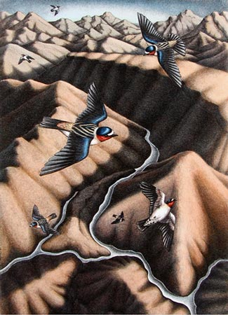
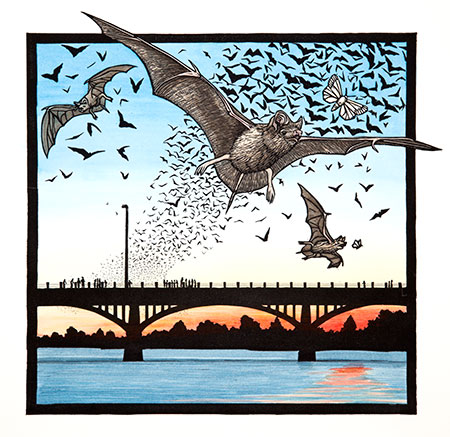

Margie Crisp Exhibit at Austin-Bergstrom International Airport
A selection of original hand-colored linocuts from her book, River of Contrasts: The Texas Colorado (Texas A&M University Press, 2012)
West Airside Gallery
Behind Book People across from Gate 11, concourse level.
On display through December 4, 2012
For information about purchasing original art, please contact:
Wally Workman Gallery
512-472-7428
workman@wallyworkman.com
Click HERE to purchase a signed copy of River of Contrasts.

Lady Bird's Lake Exhibit
Lady Bird Johnson Wildflower Center
Opens Sept. 1
An exhibit of photos, paintings and more (including prints by Margie Crisp) opens Labor Day weekend in honor of the work of Lady Bird Johnson and others to develop the hike and bike trail along Lady Bird Lake.
McDermott Learning Center, Lady Bird Johnson Wildflower Center, 4801 La Crosse Ave, Austin, TX
Exhibit runs September 1 through December 2, including on Labor Day, Sept. 3.
To learn more, visit: http://www.wildflower.org/exhibits, or call 512-232-0100.
UPCOMING:
River of Contrasts at Wally Workman Gallery
October 20, 2012 through November 10, 2012
Opening Reception & Book Signing
October 20, 6-8 PM
Wally Workman Gallery
1202 West 6th Street
Austin Texas 78703
512-472-7428
workman@wallyworkman.com

Tribute to a River at the Art Center of Waco
Part of the Art Center of Waco's 40th Anniversary Celebration and Fall Festival
October 25, 2012-January 2013
Opening Reception and Book Signing
October 25th, 6-9 PM
The Art Center of Waco
1300 College Drive
Waco Texas 76708
254-752-4371